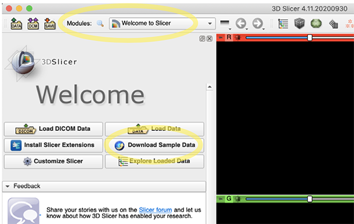

3D slicer （Win, Mac, Linux）
(This page is still in Japanease only.)
3D slicerでやること
- インストール
- DICOM編、アプリの操作に慣れる
DICOMデータ読込
画面表示 B、R、G、Y 青、赤、緑、黄
スライス閲覧
拡大縮小
移動
CT値の調節
青画面（3D View）
スクリーンショット - CoMBI, JPEG編、本番です。
単位設定
連続JPEG画像の準備
ファイル名一括変換、必要に応じて
連続画像の読み込み（Loadとよぶ）
連続画像の設定
Volume Rendering
動画
保存
セグメンテーション、体積
3Dプリンタ
3D slicer は、無料のオープンソースソフトウェアです。、米国ブリガム・アンド・ウィメンズ病院（ハーバード大学関連病院）が 2002年から開発しています。対応OSは、Windows、Mac、Linuxと幅広く、現在もアップデートや機能拡張（Extensions = plug-ins）が続けられています。
CoMBI 開発当初の2014年頃、JPEG連続画像が扱える3Dビューワを検討し、多機能で動作が軽い OsiriX を選択しました。しかし、OsiriXは有料化し、オープンソース版Horosは動画書き出しバグがあり、OsiriX/HorosにはMac版しかなく、CoMBI普及の観点からはベストな状況ではありませんでした。かつては、OsiriXと3D slicerとの間に機能的な違いがありましたが、現在はどちらもできることは同じです。（かつては、動画描きだしが簡単にできるOrisiX、できない3D slicerでしたが、2016年の3D slicer v4.6以降は、動画書き出し機能が実装されています。）
3D slicer はノートパソコンでも安定して動作するのを確認しています(2018年製,i5-8250U 1.6-1.8GHz, RAM8GB、および、i5-7300U 2.6-2.7GHz, RAM8GB, 共に統合グラフィクス、Windows10)。アプリ本体の容量は、Horos 150MBに対して、3D slicerは1.2GBとなっていますので、ディスク残量だけは気になる場合があるかもしれません。
本書での3D slicer利用環境は、3D slicer v4.11 (2020.9.30), macOS 10.15.7 iMac 2017 (4.2GHz Quad-Core Intel Core i7, ,64GB 2400 MHz DDR4, Radeon Pro 580 8 GB). MacBookPro15 (2018, 2.9GHz 6-Core Intel Core i9, 32 GB 2400 MHz DDR4, Radeon Pro Vega20 4GB), MacBookPro16 (2021, M1 max, 64GB unified) です。3D slicer 公式の推奨環境は、「メモリ最低4GB 推奨8GB〜、単体GPU推奨、データ量より大きいVRAM、CPUマルチスレッド推奨」です。
公式Documentが3D slicerのホームページにあります。また解説動画もネットで多数見つかります。筆者は 3D slicer の練習中で、とくに「動画」「セグメンテーション」はあいまいさ、不完全さがのこります。くわしくはぜひ公式サイトへ
https://www.slicer.org/wiki/Main_Page
インストール
ホームページからDownload Slicerへ Win, Mac, Linux対応
Macの場合、「開発元が確認できません」というメッセージがでます。macOSで対処することです。System Preferences> Security & Privacy> General> Allow apps downloaded from:で、インストールの許可してください。
DICOM編
アプリの基本操作に慣れる。サンプルDICOMデータで練習できる。
起動、モジュール
初期は、Module Welcome to Slicerが表示される。モジュールとは、各種機能のこと。あとにつづく説明で頻繁に出てくる用語。

起動とサンプルデータ
DICOMデータ読込
とりあえず、練習をはじめるなら、公式のサンプルDICOMデータを入手できる。Download Sample Dataボタン。
手持ちの DICOM データがある場合、Finder（Mac）から、フォルダごと、ドラッグ&ドロップ （ウィンドウ内のどこでもよい）。
メッセージ Select a reader, とりあえず、Load directly into DICOM databaseで、OK。DICOMの場合で、パソコン内に患者一覧データベースを作る場合です。
Module DICOMに切り替わって、患者一覧になる。
患者名をダブルクリックすると、画像表示へ進める。
画面表示 B、R、G、Y 青、赤、緑、黄
デフォルトでは、4面表示（Four-up）である。
赤、緑、黄には、直交面MPR（Multiple Planer Reconstruction）が表示される
青には、Volume Rendering などを表示させられる（後述 Volume Rendering）。青画面のことを3D Viewとよぶ。
画面表示は変更でき、4画面から1画面などから選べる。上に並ぶ"アイコン"をつかうか、Menu barの、View>Layout>Four-upから選ぶ。
スライス閲覧
連続画像をパラパラとめくって観ることです。各画面の上端にあるscroll barや、scroll wheel of your mouseでめくれます。CTなどのDICOM画像の場合、一枚の画像をスライスと呼ぶことから、閲覧する行為にも、スライスという用語がでてきます。
拡大縮小
赤、緑、黄画面の場合 right bottun of your mouseで、上下ドラッグする。または、各画面にある押しピン様のマークPin-like markと その下の拡張マークExtension markに Field of Viewがある。元に戻すときは、各画面のY、R、Gの横に、中央配置ボタンCentering buttonというのがあります。迷子になったときに押すと便利です。
移動
赤、緑、黄画面では、Windowsマウスの場合、Pushing center wheel + dragする。MacのMagicMouseの場合、Shift+left button + dragする。
CT値の調節
明るさとコントラストの調整を行う。CT画像の場合、明るさを明るく/暗くすることを、Window level（L）を上げる/下げると表現する。コントラストを上げる/下げることをWindow width（W）を小さく/大きくすると、表現する。
- 方法 1 アイコン
Adjustで、画像上ドラッグ、上下左右で明るさとコントラストが変わる。 - 方法 2
ModuleVolumesなかほどのプルダウンメニューで、Auto W/L,Manual W/L,Manual Min/Maxを選ぶ。その下に、スクロールバー。
青画面（3D View）
青画面（3D View）は、3つの機能がある。
-
Volume Rendringの画像を表示
- モジュール
Volume Renderingを選ぶ - 眼の印
Eye mark（Volumeの左側）をON/OFFすると、青画面でのVolume Rendering像を表示/非表示 - 青画面左上のボタン
Centeringで、中央に表示させる。迷子になったときに便利です - ドラッグして、向きを変えられる。このとき、アイコン矢印のマーク
Select toolにしておく scroll of your mouse上下で拡大縮小- ▽
Display,Presetで着色をえらぶ - ▽
Advanced,Volume Propertiesで、 着色を調節できる。点を下げると透明感が出る - ▽
Display,RenderingdGPUがあるパソコンならGPUを選ぶと動作がよくなる) - ▽
Display,Display ROI, Volume Renderingする範囲を限定できる（見たい領域だけにする、作業が軽くなる）。画像中の点dots in the imageを動かす、または、▽Advanced,ROIのScroll barを動かす
- モジュール
-
スライスを青画面に表示（画像一枚を青画面に表示）
- 赤画面の左上、押しピンマーク
Pin like markからでたメニューのうち、眼の印Eye markで表示のON/OFF。緑、黄でも同様に。
- 赤画面の左上、押しピンマーク
-
セグメンテーションの結果を表示
- モジュール
Segmentation Editorを選ぶ。ボタンShow 3Dで表示/非表示を切り替えます。
- モジュール
スクリーンショット
- アイコン、カメラマーク
Camera markを押すと、設定ウィンドウがでる。 - 画面を選ぶ
Save as...ファイル名と場所を指定する。形式はPNGのみ。OK
閉じ方、2通り
- アプリを閉じる場合、
Slicer4.11>Quit slicer。またはショートカット、command + Q(Mac) - データだけを閉じる場合、
File>Close scene
CoMBI、JPEG 編
単位設定
CoMBIなら、μm表示をえらびたい。
1. メニューバーMenu barより、Edit> Application Settings> Units> Show advanced optionsにチェックを入れる。
1. ▽Length において、Preset> Select a presetより、Micrometerを選ぶ。OK
1. 3D slicerを再起動させると、変更が反映される。メニューバーMenu bar> Slicer 4.11> Quit Slicer
1. もし、再起動させたらmmにもどってしまう場合は、「起動＞Unit選択、OK＞連続画像読み込み＞モジュールVolumeで入力」の順でやってみる。
（2018-2021年メモ：動作が重くなるかもしれないので、µmをmmのままで使うのがよい。単位を真面目に10µmなどにすると、アプリが落ちることがあった。画像は10µm/pixelだったとしても、10mm/pixelと入力する。デフォルトは1mmで、どうやらその付近なら安定していそう。パソコン環境やスペックが影響するかもしれない。XYZの比だけは正しくしておき、計測値が必要な場合は、あとで計算してから利用する。）（2022.3.11 メモ：動作に変化はなかった。mm, µm, 比率をあわせた桁違い、いろいろな入力値を試して、セグメンテーションを実際に行った。MBP16。たんにスペックの問題だったか。かわりに、再起動でµmからmmに戻ってしまう症状を見た。）
連続JPEG画像の準備
CoMBIではJPEG形式で連続画像をつくる。3D slicerは、各種画像形式に対応しており、JPEGも直接扱える。ちなみに、PNG形式はダメなようだ。loadはできるが、Volume Renderingにかさねることができない。平面表示ではめくれているけれど、Volume Rendering上の表示は、一枚だけで不変。透明効果は反映されず、白になる。
ファイル名一括変換、必要に応じて、縮小作業の前に
CoMBIの撮影が通常に成功した場合は、必要ありません。ファイル名が9999から0001に戻ったとか、特別な事情があるときに、ファイル名を一括で変換します。
3D slicerの場合、完全な連番が必要です。連番のうしろに残しておいた元ファイル名が飛び飛びの場合、連続画像とは認識されません。完全な連番にしたとき、元データとの照合（実験の再現性確保）ができるように、メモを残してください。
Horosの場合、頭に連番さえあればよい。
| 変換前 | よい例 | 3Dslicerではダメな例 ただしHorosではよい |
|---|---|---|
| DSC_9997.jpg | 0001.jpg | 0001_DSC_9997.jpg |
| DSC_9998.jpg | 0002.jpg | 0002_DSC_9998.jpg |
| DSC_9999.jpg | 0003.jpg | 0003_DSC_9999.jpg |
| DSC_0001.jpg | 0004.jpg | 0004_DSC_0001.jpg |
| DSC_0002.jpg | 0005.jpg | 0005_DSC_0002.jpg |
| DSC_0003.jpg | 0006.jpg | 0006_DSC_0003.jpg |
- Windows OSで一括変換：
Exploreで、複数選択Select multiple files、名称変更Renameすると、「入力文字(1).jpg」と、カッコつき連番数字になる。元のファイル名は残らないので注意。 - Mac OSで一括変換：
Finderで、複数選択Select multiple files、右クリック（副メニュー）Right click, sub-menuより、ファイル名を変更Rename。完全変更や連番追記など、ある程度カスタマイズできる。プルダウンメニューのFormat, 次のプルダウン、Name and Counterを使う。 - 便利に一括変換：Adobe Bridge（有料アプリ）なら細かく設定ができる。
連続画像の読み込み（Loadとよぶ）
- 連続JPEG画像の読み込みには、フォルダごとドラッグする。または、最初の1枚をドラッグする。新しいウィンドウ
Select a readerが出る。プルダウンメニューより、Any dataを選び、OK。 - 新しいウィンドウ
Add data into the sceneがでる。自動で連続画像を認識するはずだが、念の為、Show optionsにチェックをいれてオプション表示させ、Single fileにチェックがないことを確認する。 - 連続画像の呼び名をきめられる。ウィンドウ
Add data into the sceneにおいて、呼び名を入力する。もしくは、のちにModule,Volumes,Active volumeのプルダウンメニュー、Rename current volumeでも変更できる3D slicerは、連続画像セットを、複数セット同時に扱える。医療画像における、PET-MRIの重ね合わせ（fusion）のような使い方である。CoMBIであれば、グレースケール連続画像から Volume Renderingを構築し、カラーの断面像 (MPR)を 3面重ねて表示させるといった使い方ができる。3D slicer内での呼び名を決めておき、区別したほうが作業しやすい。デフォルトは、先頭の画像ファイル名になる。これを自由な名称、例えば、Gray for 3Dや Color series などに変更する。
連続画像の設定
- ボクセルサイズ、XYZを手入力する。モジュール
Volumes, ▽Volume informationで、Image Spacingに、入力する。XYは画像のピクセルサイズ、Zは切削厚。 - 階調数を指定する。モジュール
Volumes、Thresholdで、JPEGなら、0-255。Autoにすると、0-255になる。デフォルトはCT値っぽい、±1000になってしまう。ここで設定した階調数は、ModuleVolume Renderingに連動していて、そのときの色付け作業が容易になる。
Volume Rendering
準備

眼のマークと中央寄せマークです
- モジュール
Volume Rendering - 眼のマーク
Eye markで表示をON/OFFする - 青画面左上、中央寄せマーク
Centering - マウススクロール
Scroll your mouseで拡大縮小 - マウス左ドラッグ
left dragでつかんで回す - 複数の連続画像セットを読み込んでいる場合、
Volumeのプルダウンより、表示させたい連続画像セットを選択する。 - ▽
Display、Renderingプルダウンより、dGPUがあれば、GPUを選んだ方が動作が安定する
色付け
このようなのをつくっていく手順です
▽Advanced...において
-
色の指定
Scalar Color Mapping。点をダブルクリック、または点をクリックして選択しておいて、Pointの隣のボタンで、色を指定する。Point選択や色指定は、右上のプルダウンメニューからもできる。 （今回は3色指定した。血管の明るいシグナルは赤、心筋を黄色、脂肪の暗いシグナルを青に。） -
次に透明度（各領域）を決める
Scalar Opacity Mapping点をつかんで移動する。または、点をクリックして、Oに数値入力。点は追加できる。ライン上でクリック。点を削除するときは、キーボードのdelete。 -
最後に、全体的な透明度
Gradient Opacity、両端の2点は、クリックして、数値入力。ライン上をクリックすると、点を追加できる。 追加した点は、つかんで調節するか、数値を入力するか、どちらでもよい。 -
面をVolume rendering像にかさねて表示することもできる。各画面の押しピンマーク
Pin like markから眼のマークEye markで表示ON/OFF。
固まったとき
どきどき青画面3D viewだけ、固まることがある。カーソルでは3Dイメージをぐりぐりできなくなる。ビューワのメニュー（押しピンマークPin like mark）から、Auto rotation, 自動回転ボタンを選んで、動かしてみると、カーソルが復帰する場合がある。それでもだめなら、しばらく待つと直っている。
なんだか重い
表示画質をさげてみます。モジュールVolume Rendering> Advanced> Techniques> Quality:で、描出の質を3種から選べます。もっとも動作が軽快なNormalを選んでみる。デフォルトはAdaptive。Maximumはかなり重いようでほぼ固まります。3種どれでも画質はほとんで変わらず、Normalで十分きれいに描出するようです。
表示位置を保存する モジュールSceneView
3D ビューワや2D ビューワでの表示位置を保存しておくと、いつでも戻ってこられる。ただし、色付けの調整などは保存されていない。
- モジュール
Scene Veiwsまたは、カメラマークの右隣のマーク - 新しいウィンドウ
3D Slicer SceneViewがでる。保存したい画面（R, G, Y, B）を指定できる。 OK。- 保存したSceneを読み込むときは、
カメラマークのふたつとなり
動画（簡易、おすすめ）
macOS付属Screen Shot（Applications> Utilities> ScreenShot.app）で動画と静止画を保存できる。Windows10付属Game Bar（Windows button+G, Setting> Game Bar> ON）で録画、Windows付属Snipping Toolで静止画面を保存できる。メリットは、あらゆる動きが録画できることです。デメリットは、マウスやトラックパッドで3Dイメージを動すので、少々ぎこちなさが残ることです。単純な横回転なら、青画面のメニュー（押しピンマーク）にあり、スムースな動きを表現できます。上記のSceneViewを利用したり、あとで動画アプリ（iMovie, Adobe Premiereなど）で編集することも考えれば、けっこう自由に動画をつくれます。実際、素材として、動画や静止画を様々なパターン；色違いのVolume Rendering、断面表示のON/OFF、SegmentationのON/OFFなどで作っておき、あとでそれらを組み合わせ、動画制作しています。
動画（公式 2016年〜）
2段階になっていて、ステップ1:モジュール sequencesで操作の様子を記録し、ステップ2:モジュールUtilities> Screen Captureで、記録したsequenceを呼び出して、動画ファイルに書き出す。事前設定が必要。
Video(mpeg 書き出し)には、 事前設定 Setting up ffmpeg が必要
-
未設定の場合、下記の手順を進めていくとステップ2で、▽
Advanceのところに赤字のエラーがでて、その横にHelp...リンクができる。クリックすると、3D Slicerのサイトに行く。 -
記載に従い、Macならアプリ
Terminalを使って、Homebrewをインストール- Homebrewのとき、
Xcodeインストールまたはアップデートも要求される。 -
ffmpegインストールを行うセットアップには時間がかかった、Xcodeアップデート30分、homebrew30分、ffmpeg15分、計75分（自宅wifi夜）、大学LANでも合計16分間かかった。
-
ffmpeg executableの欄に、ffmpegのアドレスを入力する。/usr/local/bin/ffmpegffmpegは、フレーム画像（連続 PNG）から動画に変換する機能。連続PNGをつくる段階には、ffmpegは関わらない。3D slicerの動画作成の挙動をみていると、いったんPNGの連続画像にしてから、動画変換をしている様子。
ステップ 1
操作している様子を記録できる。画面、Red, green, yellow, camera（3Dの画面）のどれかを指定できる。
- モジュール
sequences - ▽
Browsing,Sequence browserのプルダウンより、Create new sequence browser as..., 新しいウィンドウRename sequenceで、名前を決めて入力。図ではdemoとした。 - ▽
Synchronized nodes（こんかいは、3種類のウィンドウを記録する。1.赤で画像をめくる、2.黄で画像をめくる、3.青3D viewでVolume Rendering像を動かす」を記録する） 緑の+ボタンでsequenceをつくる。（こんかいは、3回押して、3種のウィンドウを指定する）Proxy nodeを設定、各sequenceに、赤画面Red, 黄画面Yellow, 青画面Cameraを設定。（プルダウンには Camera が複数あって、記録されるCameraと記録されないCameraがある、らしい。順に選んで試してみる）- ▽
Browsing赤マルボタンで記録開始する。停止も赤マルボタン。動かしている時間だけ記録される。静止している時間は記録されない、らしい。（記録中の様子 「1. 赤で画像をめくる、2.黄で画像をめくる、3.3D viewでVolume Rendering像を動かす」） - ▽
Browsing緑三角ボタンで再生、停止。
ステップ２
記録したものから、動画ファイルをつくる。
- モジュール
Utilities,Screen Capture -
▽ Input
Master View:
View 1が青画面3D viewのこと。もし青を複数表示させていれば、 View1, 2, 3.. となる。
Animation mode:
3D totationは、単純な回転動画。sequenceは、自作したsequenceを呼び出して、動画にする。（今回は demo を動画にする） -
▽
output
Output type:
Image seriesは、PNG連続画像として書き出す (動画にするのは追加機能ffmpegが必要)
Videoは、mpeg4を書き出す
Number of images,Video length,Video framerateを設定する。
保存場所Output directory、ファイル名Output file nameを設定する。
Captureボタンで、書き出し開始。下の小窓にDoneと表示されるまで待つ。
Capture隣の緑の右矢印ボタンで、書き出した動画ファイルを開く
動作が重いとき
- 一般のビデオは、30frame/secondである。このデモでは4秒分、120枚のPNGを書き出した。もし、10秒動画300枚とすると、だいぶ時間がかかる。
- もし、青ウィンドウ、3D View を大きく表示していると、時間がかかる。
- 連続PNGやビデオ変換かかる時間は、パソコンのスペックによるし、待てる時間はひとそれぞれなので、なんどかやってみる。
保存
2通りある。画像データや作業内容を、まとめてひとつのファイルとして保存する方法と、個別にする方法がある
画像データも作業内容もひとつのファイルに保存する（公式サイトでは推奨）
拡張子はmdb。画像、着色、シーンなどの設定を一括して保存できる
- アイコン
SAVEウィンドウの左上。新しいウィンドウSave Scene and Unsaved Dataがでてくる。 - プレゼント箱みたいなアイコン
Present box-likeをONにして、mrbを指定 - 保存先を指定する。外付けディスクを指定する場合だけ注意：ファイル右横のマーク
...から指定すること。下のボタンChange directory for selected filesでは指定できない。 - 開くときは、mrbファイルを3D slicer のウィンドウへ、ドラッグ&ドロップする。保存したときの作業状態が再現される。
作業内容を個別に保存する（なにかとメリットはある）
生成されるファイルのうち、.mrml（シーン設定）、.png（シーン、アイコンの代わり）、.nrrd（連続画像）は、必須のファイル。もし、作業していれば、.seg.nrrd（セグメントをまとめたファイル）や、.h5（Transformのファイル）など追加で生成される。シーンとは、作業していたウィンドウの状況.mrmlと、見た目.pngのことである。見た目のpngのおかげで、次に開くときに作業内容を思い出しやすい。個別ファイルが使いやすい場面として、複数サンプルに同一処理、たとえば、Volume Renderingで、複数サンプルに同じ着色をしたいときや、セグメンテーションは軽い連続画像でやっておいて、できあがったらセグメンテーションだけを重い連続画像と合わせたいときが考えられる。また、上書き保存が速いというメリットもある。
- アイコン
SAVEウィンドウの左上。新しいウィンドウSave Scene and Unsaved Dataがでてくる。 - mrbをOFF。
プレゼント箱ボタン - 保存先はデフォルトなら、.mrml, .png, /Data。連続画像と作業ファイルは「Data」フォルダに保存される。変更してもよいが、階層構造をのちのち保つこと。変更する場合は、マーク
...で個別に、下のボタンChange directory for selected filesで一括して行う - 開くときは、.mrmlファイルのみを3D slicerのウィンドウにドラッグドロップする。ほかはリンクされていて、自動で一括して開かれる。ただし、保存時の階層構造を保っておく必要がある。
- 上書き保存では、ボタン
SAVEをおすと、別ウィンドウがでて、左のボタンSelect Scene & Modidied Data Onlyにチェックが入っている。これで、.mrml（シーン設定）、.png（シーン、アイコンの代わり）と、更新したファイルのみが保存される。となりのModidied Data Onlyにすると、シーンが更新されない。 - ヒント：Segmentのファイル名は、[Active segmentation].seg.nrrdになっている。モジュールSegmentationsでCreate New Segmentationsでつくった名称＝複数のセグメントをまとめているところの名称。
セグメンテーション
- 3Dslicerだけで手作業でSegmentationする手順を下に示します。使用するツールは、
PaintとFill between slicesとSmoothだけにしてシンプルです。他に領域限局やシグナル強度の範囲指定など、さまざまなツールが備わっていますが、CoMBIのフルカラー画像なら、基本のPaintとDrawが役立つでしょう - 抽出したい対象物によっては、3D slicerだけでは不便な場合もあるでしょう。iLastikは、機械学習でSegmentationして、二値化やグレースケール連続画像をつくってくれます。こちらのページ「Segmentation by iLastik」に記しました。また、Photoshopは、「色域指定」で二値化連続画像をつくれます。こちらHorosのページの中の「色域指定」に記しました。iLastikやPhotoshopでつくった二値化やグレースケール連続画像は、3D slicerで
Volume Renderingしたり、Segmentation,Thresholdを施したりします。 - 推奨の作業環境は、タッチペンです。私はMacBookPro15 2018またはMacBookPro16 2021にiPad Pro 2018 A12X（SideCar）をつなげ、Apple Penで描いています。SideCarでの接続は、無線より有線のほうが安定します。Windowsノートなら元々タッチパネルになっている商品があって便利そうです。WindowsマシンにiPadをつなげるアプリもいくつかあるようですが、私は試していません
- Segmentaionのデータは、mrbファイルなら一括して保存されます。Segmentaionデータだけの独立ファイルとして保存することも選べます。その場合、別のmrbに移入させられます。Segmentation作業は必要最低限のデータセットで軽快に行い、本番用の重いデータセット（RGB, grayscale, ilastik, WT-Hetero-Knockoutなど）に移入させるといった使い方ができます
-
本手順書は、はじめトリハツをつかった例で執筆しました。のちに
Fill between slicesとSmoothのところを追記し、マウスE12中腸が登場します。ややこしいですが基本的に下図のトリハツ大血管をセグメンテーションする手順ですこのようなのをつくっていく手順です。これはトリハツ。手順書の途中にマウスE12中腸も登場します
3Dslicerだけで手作業でSegmentationする手順
- モジュール
Segmentationの場合、Active segmentation: より、Create new segmentation。モジュールSegment editorの場合、Segmentation: より、Create new segmentation。ここで作るSegmentationは、フォルダのようなもの。フォルダの中に複数のSegment（例、動脈と静脈）が収まる。二つのモジュールSegmentationとSegment editorはほぼ一体のモジュールで、それらの間を行き来するには、ボタンSegmentation...やボタンEdit selectedである。迷子にならないように - ボタン
Add segmentで、新規セグメントSegment_1をつくる。名前は自由に変えられる。このときは大動脈を塗ることにしたので、名称を「Artery」とした。表示色を変えるには、四角い色表示をクリックする Paintで、大動脈を塗りつぶした- 全画像で塗る必要はなく、5枚に1枚とか、10枚に1枚の画像で塗る。等間隔がおすすめ、修正しやすいため。とびとびでよいし、がたついても良く、のちに補完（Fill between slices)と平滑化（Smooth）で仕上げる
Show 3Dボタンを押しておくと、青画面（3D view）にリアルタイムで表示されていく。さらに、モジュールVolume Renderingで、VR像も表示させると、セグメントと同時に確認できる。しかしながら、動作がかなり鈍くなるので、塗りつぶし作業中はShow 3D OFF、Volume renderingもOFFとしておき、ときどき確認するときだけ表示ONにしている- 今回の例題である大血管は輪状だったので、
Drawではなく、Paintを使った。Drawは、描いた線の内側をすべて塗りつぶすモード。使い方は、Draw+Return, Enter。Drawで線を描いたあとにリターンキーをおすと、その内部が塗りつぶされる。描くのは、円形でも、弧でもよい（PowerPointやIllustratorの、線と塗りつぶしの関係と同様）。
Eraseで塗りすぎたところを削除して、修正する-
Fill between slicesで補完（モジュールSegment Editor）Process of
Fill between slices. Reference serial images are 5x5x10 µm/voxel, 1220x875 pixels, 820 images of mouse mid gut on E12 (Not chick heart).Drawin the RED plane for whole mid gut every 5 images, and in the YELLOW plane for in a loop every 10 images.Initializeすこし待つShow 3DONで青画面に表示させる。スライドバーで描いたセグメントと補完したセグメントの透明度を調整し見やすくする- がたつきがひどければ、
PaintとEraseで修正する。Auto updateにチェックをいれて おくと、修正中に、Fill between slicesの像に反映されていく Applyで完了。ボタンUndoで元に戻せる。全体を塗れたと思ってから行う。多少の修正は、Eraseを使ったりして、あとでもできる。多少のガタツキは次のSmoothで直せる- Apply後に修正が必要なら、
Eraseなどで修正する。変な突起ができたり、近接構造が融合したりして、修正したことがある
-
ボタン
Add segmentで、Segment_2もつくる。「Vein」と名称をつけて、Paintで肺動脈を塗った。同様にFill between slicesも行った -
Smoothで滑らかにする（モジュールSegment Editor）
Comparison of smoothing methods and settings. Note that voxel size were set as 5x5x10 mm/voxel at volume module, instead of original 5x5x10 µm/voxel (millimeter instead of micrometer), for stabilize PC performance. Processing were done using MacBookPro16 M1 max. Time in yellow indicate duration of prosseccing after clicking
Apply.- Smoothing Method:
Joint smoothingを好んで使用している。（Joint smoothingは、表示中の複数のSegmentを処理し、処理時間が短い。MedianやGaussianは、選択中のセグメントだけを処理し、処理時間が長い。MedianやGaussianの設定では、長さを入力する。Medianでは、pixelsが表示される。1x1x1だと変化なし、3x3x1だとトゲくらいならなくなる。7x7x7, 11x11x7などでようやくJoint smoothing_0.5相当になるが、処理時間が非常に長くなる） Joint smoothingの設定では、数値を入力する。まずはデフォルトの0.5を試すApplyで完了- 満足できなければ、ボタン
Undoと、設定値の変更（0.3-1.0）、Applyを繰り返す - 細かい修正が必要なら、
Eraseなどを使用する。近接構造が融合してしまい、Eraseで修正した例を下に示す
Unwanted connection was erased in the RED plane using
Erasetool, and visualized in 3D View. 赤画面において、不必要につながった場所をEraseで消した - Smoothing Method:
-
Volume Renderingとセグメントを重ねて表示し確認できる。モジュール
Volume rendering、マークEyeで、青画面への表示をON。動作が鈍くなるのでOFFにして作業に戻る - アイコン
Camera（Capture Screenshot）で、静止画に描き出せる - Saveのとき、一括ファイルか、Segmentationのみの個別ファイルかを選べる。別のプロジェクトへ移入させたいときは個別ファイルにする
体積の数値を読む
- モジュール
segmentation>Quantification>Segment statistics（このモジュールをクリックすると、ウィンドウデザインが変わって、数値一覧がでる。CSVにでも書き出せば、Excelなどで使える。練習中）
工夫やヒント
-
最初はうまく行かないもの
まず一度、セグメンテーションをおおざっぱにやってみて、使うツール、塗る間隔、完成形の見通しをたてます。２回目以降が、本番のセグメンテーションです。
-
ツールを選ぶ
色と形がはっきりしていれば、
Level tracingが使えます。マウスポインターがある色と類似の色を島状に選択してくれます。mouse over+Left click。CT画像にはいいかもしれませんが、CoMBIの画像ではあまり出番はないかもしれません。もっとも、対象物によります。色が淡く、境界がぼんやりしている場合は、Paint,Draw,Eraseを使います。 -
塗る画像は等間隔
画像めくりはキーボードの矢印キー。等間隔のほうが、のちの修正がラク。例えば、2, 5, 10枚ごとにしています。
-
複雑な形状
中腸は、グニャグニャと曲がって、複数のループがある。案1：個々のループで別のセグメントにして後で融合する。案2：はじめから単一セグメントでやりたい場合、同じ画像上で、複数ループを塗ること。ダメなのは「こっちのループはこの画像で塗って、あっちのループはあっちの画像で塗る」ことで、その場合、補完が破綻する（下図）
Four parts of mid gut are shown. [Upper panel]
Drawevery 5 images for all 4 gut and previewFill between slices. [Lower panel] WhenDrawadditional region only in the left-most gut (stars),Fill between sliceswas broken. -
セグメントの中にセグメントを作りたい
「モジュール
Segmentaionと、モジュールEdit segmentaion」は、「フォルダとファイル（パソコンの基本操作）」、「グループとオブジェクト（illustrator）」と捉えることができます。例えば、心臓全体のセグメント１つと、各心室のセグメントを４つ作りたいときがあるとします。心臓全体のセグメントは、モジュールSegmentationで、Active segmentation:Create new...をつくって、その中に心臓全体セグメントをAddして、Edit selected(モジュールEdit segment)します。各心室用には、モジュールSegmentationで、Active segmentation:Create new...で、また別のSegmentationをつくり、その中に、４つ心室用SegmentをAddし、編集します。 -
作業の所要時間とセグメントの綺麗さのバランス
「1面（赤画面）目では、対象物全体を等間隔できっちりDrawし、２面目は補助的にDrawする」
1面（赤画面）だけよりは、2面（緑か、黄）で塗った場合のほうが、セグメントの仕上がりが良い。しかし、多くの面で塗ると、時間がかかる。境界があいまいでも、別の面でははっきり見える場合が多いので、多面塗りはよい。境界があいまいで自信がないとき、１面目では、控えめ・小さめに塗り、別の面で自信を持って塗れるとよい -
作業が重い
参照する連続画像（モジュール
SegmentationではMaster Volumeと表記）の大きさと枚数が、動作に影響します。カラーJPEGで500x500x500枚程度が限度のようでした（Table.1）。もっとも、パソコンのスペックにもよるとは思います。Segmentation作業用の3D slicerファイルは、縮小/減数シリーズ（500 x 500 x 500）をつかって、もし高画質シリーズ（1000 x 1000 x 1000）に重ねる必要があれば、あとでセグメンテーションファイルだけを移入するのがいいと思います。連続画像の枚数を減らすと軽くなりますが、セグメントは荒くなります。Fill between sliceの結果が悪くなるためです。XY:Z＝1:1, 1:2, 1:4くらいが限度でしょう。1:10 (例、5µm x 5µm x 50µm, 1000 x 1000 x 200枚)ではくっきりとした階段ができてしまい、さっぱりダメでした（Table.2）。そうかといって、高画質の1:2 (5µm x 5µm x 10µm, 1000 x 1000 x 1000枚)にすると重くなるし、もどかしいところです。
Segmentationの数が10個〜20個と多くなると、パソコンの動作が鈍くなっていきます。
Segmentationの大きさが大きくなると、動作が鈍くなります。例えば、マウス胚で眼球一つのセグメントと、胚子全体のセグメントを比較すると、眼球は余裕でした（Table.2,3）。
2018-2021年は、MacBookPro15（2018, i9, 4GB-HBM2, 32GB）、2022年からは、MacBookPro16（2021, M1 max, 64GB unified memory）を使っています。マシンが良くなっても、Segmentが大きくなったり、個数が増えれば、動作が重くなります。500 x 500 x 500枚あたりが安心です。M1 maxは、1000 x 1000 x 1000枚でも扱えそうな感じでしたが、順調なのは最初だけで、大きなSegmentになっていくと、かなり鈍くなり実用的ではありませんでした（Table.3）。
Table 1: Datasets for testing segmentation performance. Specimen: whole embryo of mouse on E12, computer: MacBookPro16 M1 max.
Datasets 1220 x 875 pixels,
820 images1220 x 875 pixels,
164 images610 x 438 pixels,
164 imagesType RGB, 8bit RGB, 8bit RGB, 8bit Folder
original JPEG images64 MB 14 MB 9 MB 3D slicer format
.mrb685 MB 137 MB 43 MB Size
as TIFF3.3 GB 0.66 GB 0.165 GB XYZ size 5 x 5 x 10 µm 5 x 5 x 50 µm 5 x 5 x 50 µm Table 2: Segmentation of small object; an eye ball.
Process 1220 x 875 pixels,
820 images1220 x 875 pixels,
164 images610 x 438 pixels,
164 imagesDraw
Show 3D ONA slight delay
afterEnterNo delay No delay Fill between slices
initializeNo delay No delay No delay Fill between slices
qualityGood,
filled smoothlyBad,
filled like steps.Bad,
filled like steps.Table 3: Segmentation of large object; whole body of mouse E12.
Process 1220 x 875 pixels,
820 images1220 x 875 pixels,
164 images610 x 438 pixels,
164 imagesDraw
Show 3D ON(not tested) 10 to 20 sec delay
afterEnter5 to 10 sec delay
afterEnterFill between slices
Initialize(not tested) 1 min 25 sec delay,
afterEnter18 sec delay,
afterEnterFill between slices
Show 3D(not tested) immediately immediately Fill between slices
Apply(not tested) 10 sec delay
afterEnter2 sec delay
afterEnterSmooth
Joint smoothing(not tested) 55 sec delay
afterEnter16 sec delay
afterEnter -
Segmentationの結果が粗い
最初は、とびとびに塗っていき、まずは結果を見てみます。
Fill between slicesの結果に満足できなければ、塗る枚数を増やします。サンプルや塗りたい領域によってどのくらい丁寧に塗れば良いかはことなります。あとでSmoothingを使うとかなりなめらかになります。 -
キーボードの矢印キーが効かない
いちどズームイン・ズームアウトすると、効くようになることがあります。そのうちに効くようになることもあります
-
DrawやPaintが効かない
Drawで描いたあとRetrunを押しても反応しないときや、Paintが無反応になるときがあります。いちどズームイン・ズームアウトする。もしくは、ツールを矢印Noneに一旦切り替えてから、改めてDrawを選ぶと、効くようになることがあります -
iPad, Side car, Apple penで表示位置が飛ぶ
ズームイン・ズームアウト（ピンチイン・ピンチアウト）して、元の見たい位置に戻します。入力デバイスが多く（Apple Pen、マウス、トラックパッド、キーボード）どこかに触れてしまうとずれる時がありました。また、スライスめくりのバーをApplePenで操作すると位置飛びが起こりますが、マウスで操作すると飛ばないようです。
-
青画面に断面像を表示できない
眼のマーク
Eye markでON,OFFしてもなにも起こらなかったり、真っ黒な画像が表示されたりすることがありました。いったん、モジュールDataで、連続画像を捨てて、改めて連続画像を読み込みます。Data Loadまたは、Drag & Drop。この症状が見られたのは、Volume renderingとSegmentationと断面を同時に表示をさせようとしたときでした。かなり重い作業です -
単位設定を忘れてた！
単位をµmに変えるのを忘れ、mmのままでSegmentation作業を進めてから気づいたことがありました。そんなとき、あとでモジュール
Transformで修正できます。例として、60x60x80mmではなく、60x60x40µmにしたいとき、行列表示に、0.06, 0.06, 0.08と斜めに入力します。
3Dプリンタ
モジュールSegmentationsから、3Dプリンタ用なら、STLなど外部へのExportを行う。モジュールSegmentationsには、別のExportもあって、3D slicer内のモジュールModelへのExportである。ややこしい。
-
3Dプリンタ用のデータを出力する。
Export to filesファイルとして、外部にExportされる。きっと3Dプリンタ用。- Destination folderをきめる。保存先。
- Visble segments only; このみでチェック。
- Reference vol: わからないがデフォルト、連続画像セットの名称が記されている。
- File format: STL
- Scale size: CoMBIのデータなら、実際のスケールµmと、入力した数値mmを考慮して。
- ボタン
Export
-
3D slicer内のモジュール
Modelへ出力する。Export/Import models and labelmaps- Operation:
Export, - Output type: Models, Output node:
- Export models to new folder (デフォルト、赤い矢印ボタンでデフォルトに戻る)
- Advancedはいじらないで。
- ボタン
Export - モジュール
ModelにSegmentがうつった。モジュールDataにデータが増えたことを確認できる。3D slicer内でのExport。きっと、いろんないろつけ。Segmentの表面をレインボーカラーなどカラフルにしたり、各スライスでの色を違えたりできる。
- Operation: